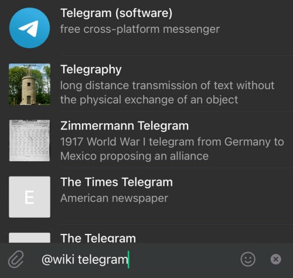
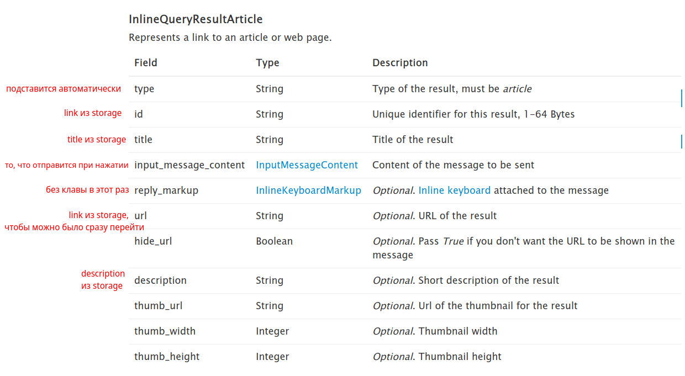

内联模式¶
使用的 aiogram 版本：3.7.0
理论¶
为什么需要内联模式？¶
在前面的章节中，机器人和人各自独立地进行交互，但是 Telegram 中存在一种特殊的模式， 允许用户以自己的名义发送信息，但由机器人帮助。这被称为**内联模式**（Inline mode）， 现实中它看起来像这样：

但实际上如何应用这样的功能呢？我提议查看一些拥有内联模式的半官方 Telegram 机器人的名称：
列表可以继续很长时间，但要点希望很清楚：内联模式非常适合搜索内容以插入当前聊天。 其中一些此类机器人的功能（like、poll、gif）Telegram 内置到了官方应用程序中， 但其他的至今被很好地使用。
重要
提醒一下，如果在内联模式发送的消息上附加了带有回调按钮的键盘，
按下它时机器人会收到 CallbackQuery 对象**不包含** Message 对象。
代之以一个意义不大的 inline_message_id。
传入请求的格式¶
当用户在聊天中写下机器人的用户名后输入文本时，会创建一个类型为 InlineQuery 的更新。 如果仔细研究该对象的字段，可以注意到一些奇怪的地方。
首先，没有调用机器人的聊天 ID，而是一个可选的 chat_type 字段，
显示（如果非空）聊天**类型**（私聊、群组、超级群组、频道）。原因很简单：
由于使用机器人的内联模式不需要将其添加到任何地方，添加 Chat 对象
可能会让机器人无声地跟踪和收集 Telegram 中的聊天。
其次，有一个 offset 字段，而且它不是一个数字，而是一个字符串。
这是因为默认情况下，机器人最多只能向用户发送 50 个结果以响应内联查询。
为了显示更多，需要在回复时传递 next_offset 参数，该参数将在下一个 InlineQuery 中复制到 offset 字段。
这样机器人就能理解需要从 offset 开始加载新数据。而它是字符串是因为除了数字之外，
还可以使用某种标识符，比如 UUID。
传出答复的格式¶
对用户请求的回复只有一种方法：
answerInlineQuery。
但可发送的类型多达 20 种。
准确地说，实际上有 11 种，因为其余的只是使用不同输入数据的相同类型，
例如 file_id 而不是指向媒体文件的链接。不同的类型最好不要混合在一起，
尤其是 Article 与其他类型。让我们分别考虑其中的一些。

可能最常用的类型是 InlineQueryResultArticle
（在上面的图像中）。在所有主要客户端中，它看起来像一堆矩形块，
总是有标题，有时会有描述，左边显示预览图片或只是占位符。
如果开发者设置了 url 属性，某些客户端会在描述行下方显示指定的链接，
预览变成可点击的并直接在浏览器中打开链接。
单击该行时，会发送 input_message_content 参数中指定的内容（它是必需的），
它可以有 5 种不同的类型：
- 文本
- 地理位置
- 地标（venue）
- 联系人
- 发票（invoice）
其他类型属于所谓的"媒体文件"，我们将通过图像示例来考虑这些。 当以一组图像进行回复时，数据要么排列成垂直瓦片（如上面的屏幕截图所示）， 要么是可滚动的水平条（例如在 iOS 版本中）。
如果你再次打开 InlineQueryResult 部分，
你会看到 Photo（如同其他一些类型）以两种变体呈现：
InlineQueryResultPhoto 和 InlineQueryResultCachedPhoto。
区别在于第一个变体接受来自互联网的图像链接，
第二个接受来自已在 Telegram 中上传的媒体的 file_id。
重要
在内联模式中，无法直接从文件上传图像。要么是互联网链接，要么是 file_id。
没有第三个选项。
默认情况下，单击结果列表中的媒体文件会导致将该媒体发送到被调用的聊天。
但是如果设置 input_message_content 参数（对于媒体，它已经是可选的），
则单击时将发送此参数中指定的内容。例如，单击电影封面会发送其文本描述
以及在线电影院中查看的链接。或者单击员工照片时会发送其作为联系人的电话号码 👀。
顺便说一下，尽管媒体有 title 和 description 参数，
但客户端不显示它们，Bot API 本身也忽略它们。
answerInlineQuery 方法有几个需要注意的参数。首先是 cache_time。
它定义查询结果可以在 Telegram 服务器上缓存多长时间以避免发送到机器人。
如果您的数据是静态的或很少更改，请放心地增加此值。
其次，是 is_personal 标志，影响结果是只为一个用户缓存还是为所有人缓存。
如果您的机器人根据用户 ID 显示个性化值，请设置为 True。
本文作者曾经忘记在他的机器人 @my_id_bot 中指定 is_personal 标志，
将缓存设置为 86400 秒（1 天），然后听到了很多用户的不满，
他们试图发送自己的 ID 而不是他们的。向别人的错误学习，而不是自己的。
第三，是字符串参数 next_offset，允许实现随着滚动而加载结果，
因为在一个 InlineQuery 响应中最多只能返回 50 个值。
我们将在单独的示例中考虑 next_offset 的用法。
第四，switch_pm_text 和 switch_pm_parameter。
除了查询结果外，机器人可以在它们上方显示一个小按钮，
按钮文本来自 switch_pm_text 参数，单击它类似于深链接，
即用户将转到与机器人的私聊，输入字段处将出现"开始"按钮，
单击时机器人会收到一条文本为 /start TEXT 的消息，
其中 TEXT 是 switch_pm_parameter 参数的值。

如果对特定查询没有结果或想给用户一个快速添加某些内容的机会， 使用这种功能非常方便。还有另一个功能，但我们将在机器人开发过程中稍后考虑它。 说到这个...
实践¶
为了让机器人知道在内联模式调用时显示什么，它需要一些数据： 要么是预先保存的，要么是从用户本身获得的。作为示例， 我们将编写一个机器人，它将接受用户的链接和图像， 然后在查询时在内联模式中显示所有这些内容。
别忘了通过 @BotFather 为机器人启用内联模式： Bot Settings -> Inline Mode -> Turn on
存储系统¶
为了不深入细节（考虑到这一章已经相当长了）， 我们同意我们的测试机器人将使用普通的内存字典作为数据库的模拟。 这将允许在调试时不用担心状态重置， 如果您想用现成的链接或图像启动机器人，也将简化存储填充。 对于两种数据类型中的每一种都将有三个函数：添加数据、获取数据、删除数据。 实际上，这是整个文件的代码：
from typing import Optional
# 在现实生活中，这里应该是正常的数据库。
# 但对于示例，我们将在普通字典上演示。
# 注意，它在机器人重启时会重置。
data = dict()
def add_link(
telegram_id: int,
link: str,
title: str,
description: Optional[str]
):
"""
保存链接到字典
:param telegram_id: Telegram 中用户的 ID
:param link: 链接文本
:param title: 链接标题
:param description: (可选) 链接描述
"""
data.setdefault(telegram_id, dict())
data[telegram_id].setdefault("links", dict())
data[telegram_id]["links"][link] = {
"title": title,
"description": description
}
def add_photo(
telegram_id: int,
photo_file_id: str,
photo_unique_id: str
):
"""
保存图像到字典
:param telegram_id: Telegram 中用户的 ID
:param photo_file_id: 图像的 file_id
:param photo_unique_id: 图像的 file_unique_id
"""
data.setdefault(telegram_id, dict())
data[telegram_id].setdefault("images", [])
if photo_file_id not in data[telegram_id]["images"]:
data[telegram_id]["images"].append((photo_file_id, photo_unique_id))
def get_links_by_id(telegram_id: int) -> dict:
"""
获取用户保存的链接
:param telegram_id: Telegram 中用户的 ID
:return: 如果用户有数据，则返回带有链接的字典
"""
if telegram_id in data and "links" in data[telegram_id]:
return data[telegram_id]["links"]
return dict()
def get_images_by_id(telegram_id: int) -> list[str]:
"""
获取用户保存的图像
:param telegram_id: Telegram 中用户的 ID
:return:
"""
if telegram_id in data and "images" in data[telegram_id]:
return [item[0] for item in data[telegram_id]["images"]]
return []
def delete_link(telegram_id: int, link: str):
"""
删除链接
:param telegram_id: Telegram 中用户的 ID
:param link: 链接
"""
if telegram_id in data:
if "links" in data[telegram_id]:
if link in data[telegram_id]["links"]:
del data[telegram_id]["links"][link]
def delete_image(telegram_id: int, photo_file_unique_id: str):
"""
删除图像
:param telegram_id: Telegram 中用户的 ID
:param photo_file_unique_id: 要删除的图像的 file_unique_id
"""
if telegram_id in data and "images" in data[telegram_id]:
for index, (_, unique_id) in enumerate(data[telegram_id]["images"]):
if unique_id == photo_file_unique_id:
data[telegram_id]["images"].pop(index)
机器人中的命令¶
机器人将有几个常见命令：/start、/help、/save、/delete 和 /cancel。
前两个是信息性的，/save 开始数据保存过程，/delete 开始数据删除过程，
/cancel 相应地中断其中一个正在运行的过程。让我们从 /save 命令开始。
保存数据¶
这次我们将在单独的文件中描述状态，以便更方便地导入。
为此，我们创建一个 states.py 文件并实现 SaveCommon 类，
其中将有一个"等待输入"状态：
from aiogram.fsm.state import StatesGroup, State
class SaveCommon(StatesGroup):
waiting_for_save_start = State()
现在让我们处理保存各种类型的消息
文本¶
从文本消息开始。想法很简单：用户发送消息。如果其中有至少一个链接，
则将其提取，然后要求输入链接名称（必需）和描述。最后一步可以用 /skip 命令跳过。
如果有多个链接，则只取第一个。
除了上面描述的"等待输入"状态外，还会有两个特定于文本的状态：
"等待输入标题"和"等待输入描述"。在 states.py 中添加这些状态：
# 这里是之前的代码
class TextSave(StatesGroup):
waiting_for_title = State()
waiting_for_description = State()
让我们从两个处理程序开始，处理状态 SaveCommon -> waiting_for_save_start 中的文本。
需要捕获带链接的消息。在关于过滤器和中间件的章节中，
我们已经做过类似的过滤器，但用于用户名。现在是时候从那里复制它并根据链接进行调整了：
from typing import Union, Dict, Any
from aiogram.filters import BaseFilter
from aiogram.types import Message
class HasLinkFilter(BaseFilter):
async def __call__(self, message: Message) -> Union[bool, Dict[str, Any]]:
# 如果根本没有 entities，将返回 None，
# 在这种情况下，我们认为这是一个空列表
entities = message.entities or []
# 如果至少有一个链接，返回它
for entity in entities:
if entity.type == "url":
return {"link": entity.extract_from(message.text)}
# 如果没有找到任何东西，返回 None
return False
为了缩短导入，编辑 filters/__init__.py 文件：
from .text_has_link import HasLinkFilter
# 这样做是为了然后简单地导入
# from filters import HasLinkFilter
__all__ = [
"HasLinkFilter"
]
为什么需要两个文本处理程序？第一个将捕获带链接的消息，第二个将捕获没有链接的消息。我们来写：
# <导入>
@router.message(SaveCommon.waiting_for_save_start, F.text, HasLinkFilter())
async def save_text_has_link(message: Message, link: str, state: FSMContext):
await state.update_data(link=link)
await state.set_state(TextSave.waiting_for_title)
await message.answer(
text=f"好的，我在消息中找到了链接 {link}。"
f"现在发送我标题（最多 30 个字符）"
)
@router.message(SaveCommon.waiting_for_save_start, F.text)
async def save_text_no_link(message: Message):
await message.answer(
text="嗯...我在你的消息中没有找到链接。"
"再试一次或点击 /cancel 取消。"
)
接下来我们期望用户输入记录的标题。这里也可以将逻辑分为两个处理程序：成功和失败的情况：
# 导入和之前的步骤
@router.message(TextSave.waiting_for_title, F.text.func(len) <= 30)
async def title_entered_ok(message: Message, state: FSMContext):
await state.update_data(title=message.text, description=None)
await state.set_state(TextSave.waiting_for_description)
await message.answer(
text="好吧，我看到了标题。现在输入描述"
"（也最多 30 个字符）"
"或单击 /skip 跳过此步骤"
)
@router.message(TextSave.waiting_for_title, F.text)
async def too_long_title(message: Message):
await message.answer("标题太长了。再试一次")
return
注意代码 F.text.func(len) <= 30。Magic filter 允许您将某个函数传递给输入，
该函数将在指定的内容上执行。即 F.text.func(len) -> len(F.text)，
并且仅当属性 .text 不是 None 时（换句话说，这里还检查了内容类型）。
但实际上对于 len() 有直接的支持在
magic-filter 中：
F.text.len() <= 30
接下来是描述处理程序。这里又可以分为两个处理程序...等等，但函数 too_long_title()
实际上同样适用于描述步骤，因为我们的文本限制相同！让我们重命名它并添加另一个状态的过滤器：
@router.message(TextSave.waiting_for_title, F.text)
@router.message(TextSave.waiting_for_description, F.text)
async def text_too_long(message: Message): # 前身为 too_long_title()
await message.answer("标题太长了。再试一次")
return
现在我们来处理最后一个处理程序，它在输入短描述或命令 /skip 时触发。
由于需要捕获两个输入，我们挂上两个装饰器，在参数中接收可选的 CommandObject，
在内部查看：如果没有命令，这意味着输入了描述：
# 此函数应该在 text_too_long() 之前！
@router.message(TextSave.waiting_for_description, F.text.func(len) <= 30)
@router.message(TextSave.waiting_for_description, Command("skip"))
async def last_step(
message: Message,
state: FSMContext,
command: Optional[CommandObject] = None
):
if not command:
await state.update_data(description=message.text)
# 将数据保存到我们的假数据库
data = await state.get_data()
add_link(message.from_user.id, data["link"], data["title"], data["description"])
await message.answer("链接已保存！")
await state.clear()
所以，我们制作了一组处理程序来将链接保存到我们的内存数据库。这是完整文件的代码：
from typing import Optional
from aiogram import Router, F
from aiogram.filters.command import Command, CommandObject
from aiogram.fsm.context import FSMContext
from aiogram.types import Message, InlineKeyboardMarkup, InlineKeyboardButton
from filters import HasLinkFilter
from states import SaveCommon, TextSave
from storage import add_link
router = Router()
@router.message(SaveCommon.waiting_for_save_start, F.text, HasLinkFilter())
async def save_text_has_link(message: Message, link: str, state: FSMContext):
await state.update_data(link=link)
await state.set_state(TextSave.waiting_for_title)
await message.answer(
text=f"好的，我在消息中找到了链接 {link}。"
f"现在发送我描述（最多 30 个字符）"
)
@router.message(SaveCommon.waiting_for_save_start, F.text)
async def save_text_no_link(message: Message):
await message.answer(
text="嗯...我在你的消息中没有找到链接。"
"再试一次或点击 /cancel 取消。"
)
@router.message(TextSave.waiting_for_title, F.text.func(len) <= 30)
async def title_entered_ok(message: Message, state: FSMContext):
await state.update_data(title=message.text, description=None)
await state.set_state(TextSave.waiting_for_description)
await message.answer(
text="好吧，我看到了标题。现在输入描述"
"（也最多 30 个字符）"
"或单击 /skip 跳过此步骤"
)
@router.message(TextSave.waiting_for_description, F.text.func(len) <= 30)
@router.message(TextSave.waiting_for_description, Command("skip"))
async def last_step(
message: Message,
state: FSMContext,
command: Optional[CommandObject] = None
):
if not command:
await state.update_data(description=message.text)
# 将数据保存到我们的假数据库
data = await state.get_data()
add_link(message.from_user.id, data["link"], data["title"], data["description"])
await state.clear()
kb = [[InlineKeyboardButton(
text="尝试",
switch_inline_query="links"
)]]
await message.answer(
text="链接已保存！",
reply_markup=InlineKeyboardMarkup(inline_keyboard=kb)
)
@router.message(TextSave.waiting_for_title, F.text)
@router.message(TextSave.waiting_for_description, F.text)
async def text_too_long(message: Message):
await message.answer("标题太长了。再试一次")
return
图像¶
图像简单得多；它们在一个步骤中添加。但有一个细节：
除了后续显示的 file_id 之外，我们还需要保存 file_unique_id，
因为当我们允许用户删除保存的图像时它会派上用场：
from aiogram import Router, F
from aiogram.fsm.context import FSMContext
from aiogram.types import Message, PhotoSize
from states import SaveCommon
from storage import add_photo
router = Router()
@router.message(SaveCommon.waiting_for_save_start, F.photo[-1].as_("photo"))
async def save_image(message: Message, photo: PhotoSize, state: FSMContext):
add_photo(message.from_user.id, photo.file_id, photo.file_unique_id)
await message.answer("图像已保存！")
await state.clear()
显示数据¶
好的，我们学会了如何保存数据，现在需要以某种方式显示它。为此，
机器人应该捕获 inline_query 类型的更新，处理程序将收到
InlineQuery 类型的对象。
我们同意，对于空查询（现在）我们不显示任何内容，对于查询 @bot links
我们显示链接列表，对于查询 @bot images 我们显示图像。
当然，@bot 将被机器人的用户名替换。
文本¶
要用文本消息回复，我们需要收集一个 InlineQueryResultArticle 类型对象的列表。我们已经拥有所有必需的（甚至额外的）数据：

对于 input_message_content 参数，我们将编写一个简单的嵌套函数，
它将根据是否存在描述返回文本：
def get_message_text(
link: str,
title: str,
description: Optional[str]
) -> str:
text_parts = [f'{html.bold(html.quote(title))}']
if description:
text_parts.append(html.quote(description))
text_parts.append("") # 添加空行
text_parts.append(link)
return "\n".join(text_parts)
现在让我们描述处理程序本身：
@router.inline_query(F.query == "links")
async def show_user_links(inline_query: InlineQuery):
# 这个函数只是收集将发送的文本
# 当在内联模式中单击选项时
def get_message_text():
# 这个嵌套函数在上面描述了 ↑
results = []
for link, link_data in get_links_by_id(inline_query.from_user.id).items():
# 将每条记录添加到最终数组
results.append(InlineQueryResultArticle(
id=link, # 链接对我们来说是唯一的，所以不会有问题
title=link_data["title"],
description=link_data["description"],
input_message_content=InputTextMessageContent(
message_text=get_message_text(
link=link,
title=link_data["title"],
description=link_data["description"]
),
parse_mode="HTML"
)
))
# 重要的是指定 is_personal=True！
await inline_query.answer(results, is_personal=True)
最终得到（第二条记录的描述步骤被跳过了）：

单击时，您会得到这样一个漂亮的消息：

图像¶
图像稍微简单一点，但有一个细节：我们不能使用图像的 file_id
作为特定选项的 ID，因为它超过 64 字节（Bot API 限制）。
因此，我们将使用数组中元素的序号，转换为字符串。
其他方面，代码与前面的非常相似：
@router.inline_query(F.query == "images")
async def show_user_images(inline_query: InlineQuery):
results = []
for index, file_id in enumerate(get_images_by_id(inline_query.from_user.id)):
# 将每条记录添加到最终数组
results.append(InlineQueryResultCachedPhoto(
id=str(index), # 列表中元素的索引
photo_file_id=file_id
))
# 重要的是指定 is_personal=True！
await inline_query.answer(results, is_personal=True)
以及结果：
删除数据¶
保存的内容需要不时清理。我们也想给用户删除累积的链接和/或图像的机会。
为此，我们将处理 /delete 命令。但我们不想强迫用户输入机器人的用户名
并写入 links 或 images。为此，我们在命令的回复下放置两个按钮。
一个将打开链接查看的内联模式，另一个将打开图像查看。
向 states.py 添加新类：
现在让我们为 /delete 命令编写处理程序：
# 新导入
from aiogram.filters.state import StateFilter
@router.message(Command("delete"), StateFilter(None))
async def cmd_delete(message: Message, state: FSMContext):
kb = []
kb.append([
InlineKeyboardButton(
text="选择链接",
switch_inline_query_current_chat="links"
)
])
kb.append([
InlineKeyboardButton(
text="选择图像",
switch_inline_query_current_chat="images"
)
])
await state.set_state(DeleteCommon.waiting_for_delete_start)
await message.answer(
text="选择您要删除的内容：",
reply_markup=InlineKeyboardMarkup(inline_keyboard=kb)
)
单击这样的按钮时，所需的值被替换到内联模式中， 这将立即打开链接或图像列表（为了演示，我暂时移除了弹出菜单， 以便看到按钮）：
如果我们使用 switch_inline_query 而不是 switch_inline_query_current_chat，
Telegram 会提议用户选择他可以写入的聊天，然后在其中替换指定的文本。
剩下的是编写一个路由，它将捕获删除请求并编辑存储内容：
# 导入
router = Router()
@router.message(
DeleteCommon.waiting_for_delete_start,
F.text,
ViaBotFilter(),
HasLinkFilter()
)
async def link_deletion_handler(message: Message, link: str, state: FSMContext):
delete_link(message.from_user.id, link)
await state.clear()
await message.answer(
text="链接已删除！"
"内联模式输出将在几分钟内更新。")
@router.message(
DeleteCommon.waiting_for_delete_start,
F.photo[-1].file_unique_id.as_("file_unique_id"),
ViaBotFilter()
)
async def image_deletion_handler(
message: Message,
state: FSMContext,
file_unique_id: str
):
delete_image(message.from_user.id, file_unique_id)
await state.clear()
await message.answer(
text="图像已删除！"
"内联模式输出将在几分钟内更新。")
注意：我们按 file_unique_id 删除图像，因为每次发送图像时 file_id
都会不同（简而言之：完整的 file_id 中内置了时间戳和其他非永久性数据）。
Switch 往返¶
当我们之前讨论传出答复的格式时，
我们看到了带有 switch_pm 前缀的参数。让我们使用它们，
以便用户可以从任何聊天立即转到添加数据，而不仅仅是与机器人的私聊。
将上述参数添加到内联查询处理程序。为此，重写 handlers/inline_mode.py
文件中的 answer_inline_query() 方法调用：
await inline_query.answer(
results, is_personal=True,
switch_pm_text="添加更多 »»",
switch_pm_parameter="add"
)
在 handlers/common.py 文件中，向 /save 命令处理程序添加另一个入口点，
通过 CommandStart 过滤器和深链接 add：
# 新导入：
from aiogram.filters.command import CommandStart
@router.message(CommandStart(magic=F.args == "add"))
@router.message(Command("save"), StateFilter(None))
async def cmd_save(message: Message, state: FSMContext):
...
# 注意，简单 /start 的处理程序应该在之后出现
@router.message(Command(commands=["start"]))
async def cmd_start(message: Message, state: FSMContext):
...
同时，在添加文本和图像的最后阶段，添加 switch_inline_query
按钮，提议在另一个聊天中尝试发送某些内容：
# 文件 handlers/save_text.py
@router.message(TextSave.waiting_for_description, F.text.func(len) <= 30)
@router.message(TextSave.waiting_for_description, Command("skip"))
async def last_step(...):
# 这里是函数的其余代码
kb = [[InlineKeyboardButton(
text="尝试",
switch_inline_query="links"
)]]
await message.answer(
text="链接已保存！",
reply_markup=InlineKeyboardMarkup(inline_keyboard=kb)
)
# 文件 handlers/save_images.py
@router.message(SaveCommon.waiting_for_save_start, F.photo[-1].as_("photo"))
async def save_image(...):
# 这里是函数的其余代码
kb = [[InlineKeyboardButton(
text="尝试",
switch_inline_query="images"
)]]
await message.answer(
text="图像已保存！",
reply_markup=InlineKeyboardMarkup(inline_keyboard=kb)
)
这里有一个内联模式的另一个不错的功能：如果您不在与机器人的私聊中调用机器人，
转到"添加更多 »»"按钮，并到达最后一步，那么当机器人发送带有 switch_inline_query
按钮的消息时，Telegram 客户端将自动将用户返回到原始聊天，
并立即打开具有所需文本的内联模式！
补充材料¶
延迟加载结果¶
根据 Bot API 文档，在一个
answerInlineQuery
调用中最多可以发送 50 个元素。如果需要更多呢？
next_offset 参数就派上用场了。机器人指定它，
当用户滚动完当前批次时，它将出现在下一个内联查询中。
作为示例，让我们编写一个简单的数字生成器，以 50 个元素的批次返回，
最大值为 195：
def get_fake_results(start_num: int, size: int = 50) -> list[int]:
"""
生成连续数字列表
:param start_num: 生成器的起始数字
:param size: 批次大小（默认 50）
:return: 连续数字列表
"""
overall_items = 195
# 如果没有更多结果，发送空列表
if start_num >= overall_items:
return []
# 发送不完整的批次（最后一个）
elif start_num + size >= overall_items:
return list(range(start_num, overall_items+1))
else:
return list(range(start_num, start_num+size))
现在让我们写一个内联处理程序，使得当接近当前列表的末尾时，
Telegram 会请求继续。为此，在开始时检查 offset 字段，
如果为空，将其设置为 1。接下来生成一个虚拟结果列表。
如果输出恰好是 50 个对象，那么在响应中指定 next_offset
等于当前值加 50。如果少于 50 个对象，什么都不指定，
这样 Telegram 就不会尝试加载新行了：
@router.inline_query(F.query == "long")
async def pagination_demo(
inline_query: InlineQuery,
):
# 将偏移量计算为数字
offset = int(inline_query.offset) if inline_query.offset else 1
results = [InlineQueryResultArticle(
id=str(item_num),
title=f"对象 №{item_num}",
input_message_content=InputTextMessageContent(
message_text=f"对象 №{item_num}"
)
) for item_num in get_fake_results(offset)]
if len(results) < 50:
await inline_query.answer(
results, is_personal=True
)
else:
await inline_query.answer(
results, is_personal=True,
next_offset=str(offset+50)
)
当用户滚动内联结果时，机器人会收到请求并返回越来越多的结果， 直到达到第 195 个元素，之后请求将停止。
收集统计信息¶
很少有人知道，但 Telegram 允许收集机器人在内联模式中使用情况的简单统计信息。
首先，需要在 @BotFather 中启用相应的设置：/mybots - (选择机器人) - Bot Settings - Inline Feedback：

按钮上的数字表示用户在内联模式中选择对象时接收 ChosenInlineResult 事件的**概率**。因此，例如，如果设置值为 10%， 那么每次选择对象时都有 10% 的概率在机器人中接收 ChosenInlineResult 事件。 Telegram 不建议设置 100% 的值，因为这会加倍加载机器人。 因此，这个功能不适合任何有点严肃的分析， 但在灵巧的手中，在较长时间内可能会提供有关最有用的内联结果的概况。 以下是此类事件的处理程序示例：
from aiogram import Router
from aiogram.types import ChosenInlineResult
router = Router()
@router.chosen_inline_result()
async def pagination_demo(
chosen_result: ChosenInlineResult,
):
# 直接写到屏幕。但您可能想保存到某处
print(
f"在 '{chosen_result.query}' 查询后，"
f"用户选择了 ID 为 '{chosen_result.result_id}' 的选项"
)
尽管电报不建议为内联反馈设置高值，但这个东西至少有一个实际应用： 某些音乐机器人试图按请求加载完整版本的乐曲，而无需预先保存。 如果在调用机器人的内联模式时执行此操作，您可能无法在 10-15 秒内完成， 在此之后 Bot API 会返回有关"过期"更新的错误。
所以开发者是这样做的：在机器人搜索曲目时，
在预览中提供一个短样本（5-10 秒）。当用户单击某一行时，
会发送带有附加内联按钮的音频消息（否则无法编辑消息），
机器人捕获发送事件，从 ChosenInlineResult 类型的更新中提取消息的跨度 inline_message_id，
加载完整版本的音频，并使用此 inline_message_id 将样本编辑为完整轨道。
Telegram 教会了许多变通办法，是的。